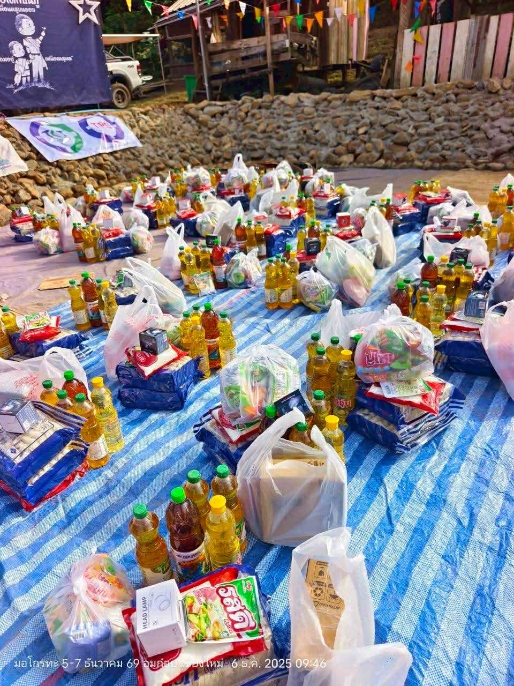
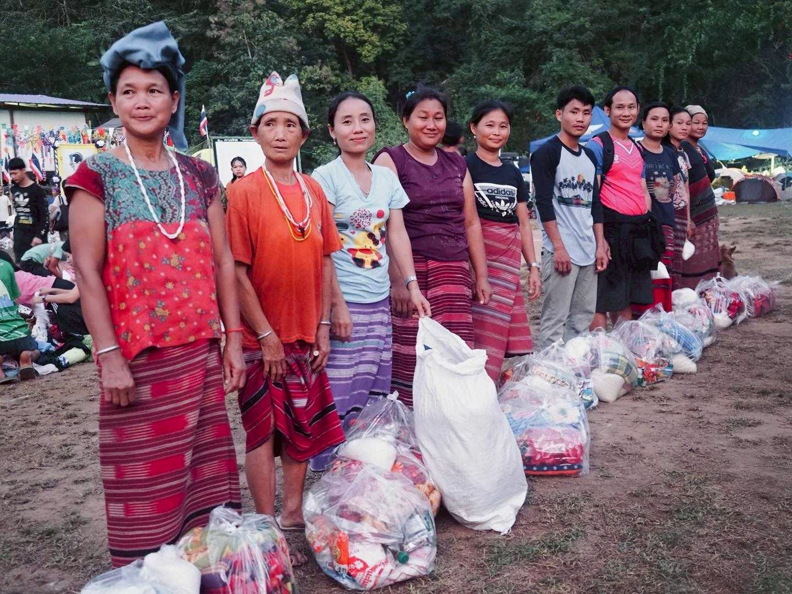
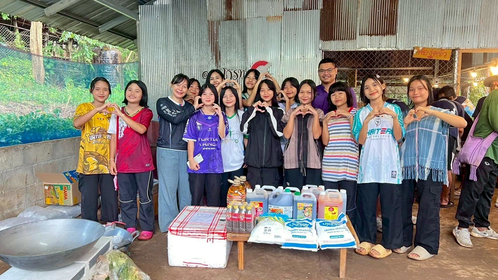
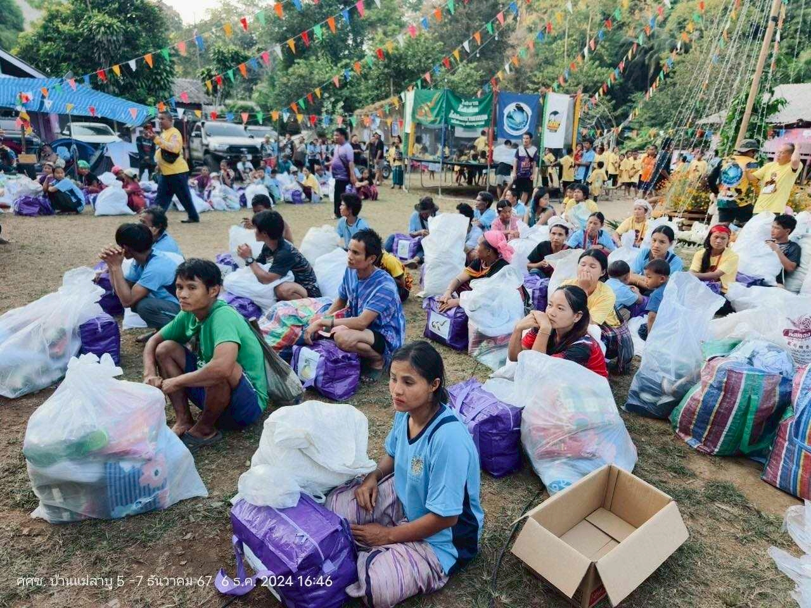

เราทำอะไรบ้าง?
“แจกจ่ายสิ่งของบริจาค”
ส่งต่อสิ่งของจากน้ำใจของผู้บริจาคทุกท่าน ให้แก่ชาวบ้านในชุมชนบนดอย ทั้งสิ่งของอุปโภคและบริโภค
“กีฬาสร้างฝันดอยสูง”
งานกีฬาเล็กๆ เพื่อเสริมสร้างความสามัคคีในชุมชน และเปิดโอกาสให้เด็กๆ การแบ่งปัน และการทำงานเป็นทีม ผ่านการเล่นกีฬาอย่างสร้างสรรค์และเหมาะสมกับวัย
“นาทีทอง”
ช่วงเวลาแห่งการแบ่งปัน ผ่านการส่งต่อเสื้อผ้ามือสองจากน้ำใจของทุกท่าน สู่เด็กๆ และชาวบ้าน
“เกมมหาสนุก”
การเล่นเกมนันทนาการกับเด็กๆ และชาวบ้าน เพื่อสร้างรอยยิ้มและความสนุกสนานร่วมกัน
“งานวันพ่อแห่งชาติและวันแม่แห่งชาติ”
เพื่อแสดงความจงรักภักดีและน้อมรำลึกถึงพระมหากรุณาธิคุณของพระบาทสมเด็จพระเจ้าอยู่หัว และสมเด็จพระนางเจ้าฯ พระบรมราชินีนาถ พร้อมทั้งส่งเสริมความกตัญญูกตเวทีในชุมชน
“ครัวมิชลินบนยอดดอย”
กิจกรรมทำอาหารเลี้ยงชุมชนเพื่อให้เด็กๆ และชาวบ้านได้ลิ้มรสอาหารแสนอร่อยที่บางคนอาจไม่เคยได้ชิมทุกเมนูคัดสรรจากเมืองกรุงสู่ยอดดอย



